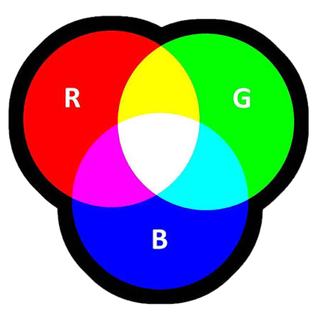

Een kleurmodel is een manier om kleuren digitaal te beschrijven en weer te geven. Computers, telefoons, televisies en printers gebruiken kleurmodellen om te bepalen welke kleuren zichtbaar of afgedrukt worden.
Twee belangrijke kleurmodellen zijn RGB en CMYK. RGB wordt vooral gebruikt voor schermen, terwijl CMYK vooral wordt gebruikt voor drukwerk.
RGB staat voor Red, Green en Blue. Dit zijn de drie basiskleuren waarmee schermen verschillende kleuren maken.
Elke kleur krijgt een waarde van 0 tot 255. Hoe hoger de waarde, hoe sterker die kleur aanwezig is.
De kleur RGB(255, 0, 0) betekent: maximaal rood, geen groen en geen blauw. Dit geeft een volledig rode kleur.
RGB(0, 0, 0) is zwart, omdat er geen licht van de drie kleuren aanwezig is.
RGB(255, 255, 255) is wit, omdat rood, groen en blauw allemaal maximaal zijn.
Bij RGB worden kleuren gemaakt door rood, groen en blauw licht met elkaar te mengen. Dit noemen we additieve kleurmenging.
Als je rood en groen licht combineert, krijg je geel. Rood en blauw geven magenta en groen en blauw geven cyaan.
Als alle drie de kleuren volledig aanwezig zijn, ontstaat wit licht.

CMYK wordt gebruikt bij printers en drukwerk. CMYK staat voor Cyan, Magenta, Yellow en Key. Key staat voor zwart.
In tegenstelling tot RGB, waarbij licht wordt toegevoegd, wordt bij CMYK inkt gebruikt om licht te absorberen.
RGB wordt gebruikt voor digitale schermen, zoals computers, telefoons, televisies en tablets.
RGB werkt met licht en gebruikt rood, groen en blauw.
CMYK wordt gebruikt voor printers en drukwerk, zoals folders, posters en tijdschriften.
CMYK werkt met inkt en gebruikt cyan, magenta, yellow en key (zwart).